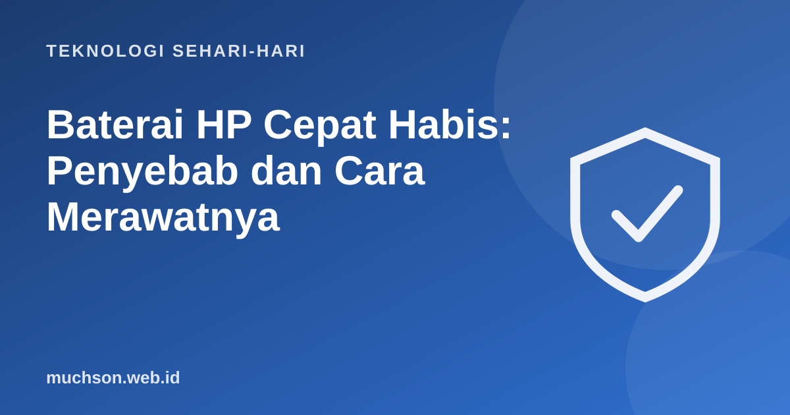

Beranda › Artikel › Teknologi Sehari-hari
Teknologi Sehari-hariBaterai HP Cepat Habis: Penyebab dan Cara Merawatnya
Pagi 100%, siang tinggal 20%. Baterai yang cepat habis adalah salah satu keluhan HP paling umum. Sebagian penyebabnya ada di pengaturan dan kebiasaan pemakaian, sebagian lagi karena baterai memang menua. Artikel ini membedakan keduanya dan meluruskan beberapa mitos yang masih beredar.

Baterai lithium-ion pasti menua
HP modern memakai baterai lithium-ion. Baterai jenis ini kehilangan kapasitas secara bertahap seiring siklus pengisian dan waktu. Apple, misalnya, menyebut baterai iPhone dirancang untuk mempertahankan sekitar 80% kapasitas awal setelah sejumlah siklus pengisian penuh tertentu (jumlahnya berbeda antar model). Artinya, baterai yang terasa lebih cepat habis setelah dua atau tiga tahun adalah hal yang normal.
Mitos dan fakta
Kenapa baterai cepat habis hari ini?
| Penyebab | Cara mengecek | Solusi |
|---|---|---|
| Layar terlalu terang | Kecerahan maksimal terus | Kecerahan otomatis, mode gelap pada layar OLED |
| Sinyal lemah | Bar sinyal rendah, sering mencari jaringan | Pakai Wi-Fi bila ada, mode pesawat di area tanpa sinyal |
| Aplikasi boros | Menu Baterai → penggunaan per aplikasi | Batasi aktivitas latar, hapus aplikasi bermasalah |
| GPS dan lokasi | Banyak aplikasi meminta lokasi terus | Izinkan lokasi hanya saat aplikasi digunakan |
| Kepanasan | HP terasa hangat saat tidak dipakai | Cek aplikasi bermasalah, lepas casing tebal |
| Baterai menua | Kesehatan baterai rendah | Ganti baterai |
Kebiasaan yang memperpanjang umur baterai
Banyak HP kini punya pengaturan untuk membatasi pengisian sekitar 80-85% atau "pengisian teroptimasi" yang menunda pengisian penuh sampai menjelang Anda bangun. Cari di menu Baterai dengan kata kunci "lindungi baterai" atau "pengisian".
Hitung kebutuhan power bank
Kapan harus ganti baterai?
Pertimbangkan penggantian baterai bila kesehatan baterai sudah rendah (di iPhone, sistem akan memberi tahu bila kapasitasnya turun signifikan), HP mati mendadak padahal persentase masih ada, atau baterai menggembung. Baterai menggembung harus segera ditangani di servis resmi: berhenti mengisi daya, jangan ditekan atau ditusuk, dan jauhkan dari benda mudah terbakar.
Tanya jawab
Apakah boleh mengecas HP semalaman?
Berapa persen sebaiknya mengecas HP?
Kenapa baterai HP cepat panas?
Apa tanda baterai HP harus diganti?
Sumber dan bacaan lanjut
- Apple: Maximizing Battery Life and Lifespan
- Apple: Baterai dan performa iPhone
- Battery University: How to Prolong Lithium-based Batteries